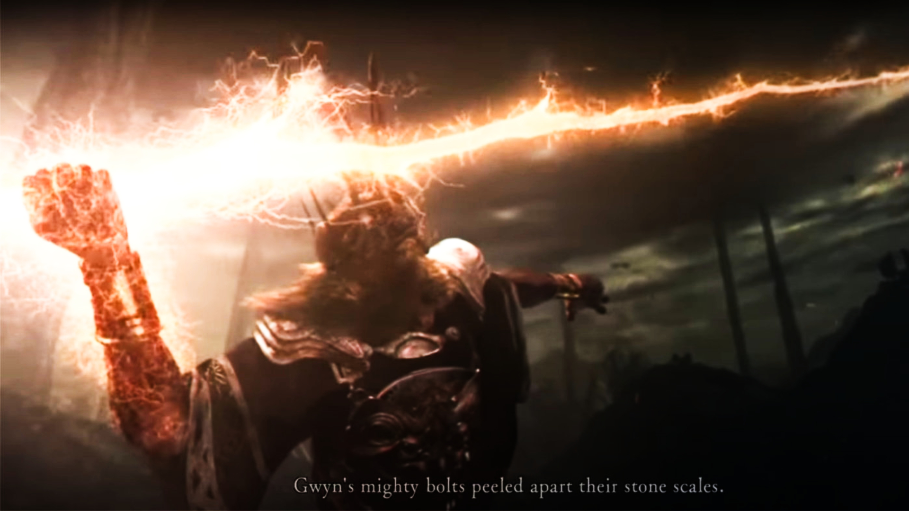

Quizás te interese

Otras páginas
Dark Souls es una serie de juegos de rol de acción creada por Hidetaka Miyazaki de FromSoftware y publicada por Bandai Namco Entertainment. La serie comenzó con el lanzamiento de Dark Souls en 2011 y ha visto dos secuelas, Dark Souls II en 2014 y Dark Souls III en 2016. Dark Souls ha recibido aclamación crítica, con el primer título a menudo citado como uno de los mejores videojuegos de todos los tiempos, y la serie en su conjunto ha sido tanto elogiada como criticada por su alto nivel de dificultad. Para 2022, la serie había enviado más de 33 millones de copias. Otros juegos de FromSoftware, incluyendo Demon's Souls, Bloodborne, Sekiro: Shadows Die Twice y Elden Ring, comparten varios conceptos relacionados y a menudo se agrupan juntos como «Soulsborn».
Sinopsis
Dark Souls es un RPG de acción en tercera persona, que se caracteriza por una atmósfera oscura y una dificultad muy por encima de los estándares actuales. El juego recibió excelentes críticas debido a su jugabilidad desafiante, su atmósfera absorbente, sus controles prácticos y a su innovador modo multijugador, la mayoría de estos aspectos importados de su predecesor espiritual Demon's Souls. El juego tiene lugar en los últimos días de la Edad del Fuego, la cual comenzó tras la derrota de los Dragones Eternos que anteriormente reinaban el mundo. Durante esta época el mundo era un lugar oscuro y lúgubre habitado solamente por una raza inmortal de dragones cuya capacidad de prolongar su vida eternamente provenía de sus escamas pétreas. En esta época aparentemente no existía aún ninguna llama, por lo que el mundo era un lugar completamente oscuro, amorfo y casi desierto. Así fue hasta que de la nada y sin nada que la provocase más que un ciclo natural, surgió la primera llama, un grupo de seres descubrieron en ella cuatro grandes almas. Nito el primer ser en morir, la bruja de Izalith y sus hijas del Caos, Gwyn el señor de la Luz Solar y portador del alma en teoría más poderosa, y por último el furtivo pigmeo portador de el Alma oscura y que desapareció poco después de hacerse con la misma. Con el poder adquirido, Gwyn y los otros grandes señores (Nito y la bruja de Izalith) desafiaron a los dragones con la ayuda de los humanos como es revelado en Dark Souls 3 y posteriormente la ayuda de Seath, que tenía cierta envidia a sus hermanos por este carecer de escamas eternas siendo por ende el único destinado a morir, y gracias a todo esto fue que Gwyn ganó aquella gran guerra. Con todos estos acontecimientos empieza la historia de Dark Souls, repleta de secretos y que hasta día de hoy realmente no se ha podido dar una respuesta definitiva a la misma, más que hay muchas teorías al respecto. Los seres que lideraron esta guerra, como es relatado en la historia, son seres muy especiales, cuyas almas poseen un poder descomunal.
